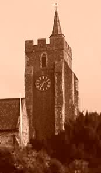

St.
Mary the Virgin, Rolvenden
Details of the Bells
| Treble |
5-0-0 |
F |
Thos. Mears the Younger |
1819 |
| 2 |
5-2-0 |
E |
Thos. Mears the Younger |
1819 |
| 3 |
6-0-0 |
D |
Thos. Mears the Younger |
1819 |
| 4 |
6-3-0 |
C |
Thos. Mears the Younger |
1819 |
| 5 |
8-1-0 |
Bb |
Thos. Mears the Younger |
1819 |
| 6 |
9-0-0 |
A |
Thos. Mears the Younger |
1819 |
| 7 |
10-2-0 |
G |
Thos. Mears the Younger |
1819 |
| Tenor |
16-2-0 |
F# |
Thos. Mears the Younger |
1827 |
Tower History
1819 – A new ring of eight was cast
for the tower by Thomas Mears the younger.
1820 – A new band formed as soon as
the bells were installed. In
under 12 months, with only the help of only a book about the art, the band
scored their first peal; Bob Triples in November.
The conductor was Edward Lansdell (Junr.) [aged 19] who became a
very accomplished ringer and a member of what was known for a short time
as the Sussex Society (Ringers of St Saviours, Southwark).
They subsequently renamed themselves the (Junior) Society of
College Youths. These
societies had broken away from the older College Youths who believed that
the younger ringers were not of a suitable class to be members of their
Society. After a time the two
Societies united, as the Ancient Society of College Youths, and have been
known as such ever since.
1821 – In February the same band (made
up mainly of Lansdell’s and Goble’s) scored a peal of Union Triples,
again conducted by Edward Lansdell (Junr.)
1822 – In February the same band rang
a peal of Grandsire Triples, with Edward Lansdell (Junr.) again
acting as conductor. In all
these peals Edward Lansdell (Senr.) rang the Tenor.
He was the Father of the other Lansdell’s in the band, and to
make matters even more complicated, it appears from the gravestones in
the Churchyard that his Father was also called
Edward!
1827 – The tenor was recast by Thomas
Mears the younger.
1833 – 1870’s - By 1833 Edward
Lansdell (Junr.) had become a ringer at St Saviour, Southwark (now
Southwark Cathedral), as a peal board records him as calling a peal of
Stedman Quators at Leeds, Kent in that year.
There were two men required on the Tenor.
Lansdell died sometime during the 1870’s or 1880’s.
He had been in most of the ground-breaking performances of the
College Youths, including the 8580 Stedman Cinques at St Michael,
Cornhill, when aged 60.
1844 – George Lansdell was evidently
also involved with the College Youths.
A peal board shows that he rang the tenor behind to a peal of
Grandsire Triples in this year at Rolvenden.
The conductor was George Stockham, handbell founder at Whitechapel
Foundry (who also had two trebles cast for Hythe in 1860, and then
chiselled the inscriptions off. He
tried to pass them off as his own work, but they were so out of tune with
the other bells at Hythe because of his tampering, that they were scrapped
at Whitechapel in 1891 to defray the cost of recasting the Tenor at Hythe)
Stockham was also a member of the band in the 8580 at Cornhill.
1890’s – The Kent County Association
scored several peals at Rolvenden.
1899 – A peal is recorded on a board
in the tower by the KCA. The
board is an identical design to one at Appledore in 1901, and supports
the supposition that the foundation of a District Guild was very much in
the minds of ringers from the surrounding areas.
1905 – The first peal rung at
Rolvenden for the RM & DG – Grandsire Triples.
A couple of other boards on the walls also record peals by
the Guild. The Guild rang
many peals here, and had several active members in the local band who took
part in eight bell peals at Rolvenden and elsewhere.
1920's – Bells quarter turned and
rehung on plain bearings.
1996 – The bells were removed from the
tower, the old wheels and headstocks disposed of, the canons cut off, and
the bells rehung in the old frame on new metal headstocks and ball
bearings with independent SG clappers.
Ringing Times
| Sunday: |
9:45 am |
| Practice: |
Monday 7:30 pm |
N.B. The bells are rung regularly by the local band, some of whom are Guild members as listed below.
Members
| Ringing Master: |
Mrs L. Smith |
| Members: |
O.C. R. Webster
A. Sawkins
R. Pannell
|
|
{kind=link}